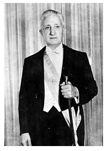
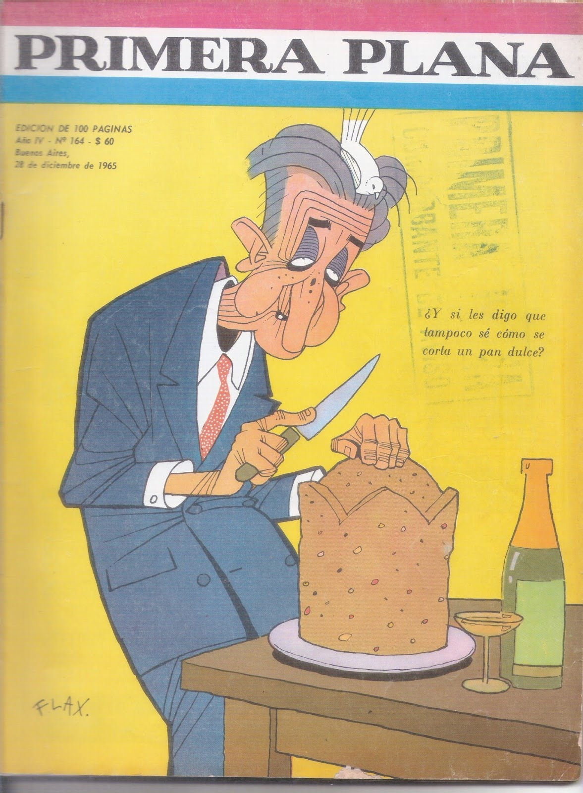
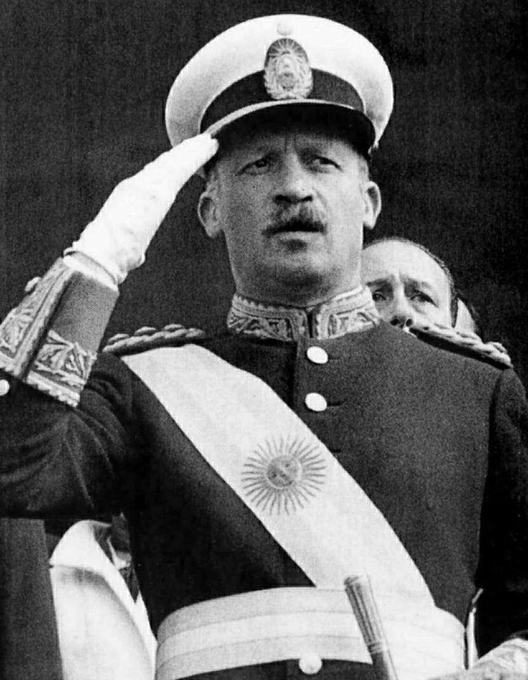
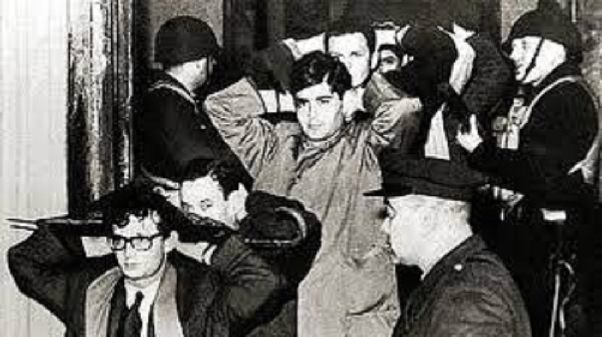
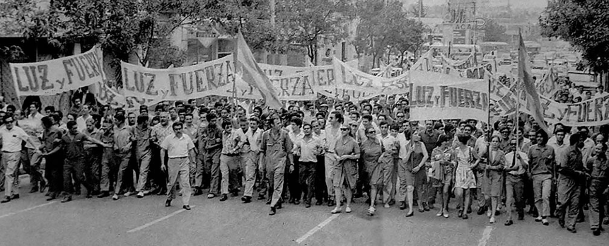

Golpes de Estado
Golpe de Estado de 1966
En 1963, mediante elecciones democráticas, el candidato de la Unión Cívica Radical del Pueblo, Arturo Umberto Illia asumiría a la presidencia del país, aunque tan sólo obtuvo el 25% de los votos.
Esto debido a que el Partido Justicialista continuaba proscripto y sus seguidores votaron en blanco. Pero fue suficiente para que la fórmula Arturo Illia-Carlos Perette asumerían el cargo de presidente y vicepresidente de la Nación.

Arturo Umberto Illia
Fue un médico y político argentino, presidente de la Nación Argentina entre el 12 de octubre de 1963 y el 28 de junio de 1966.
Durante su gobierno intentó anular los contratos petroleros firmados por el expresidente Frondizi con compañías extranjeras, pero terminó por anular unos pocos acuerdos, renegociar algunos y la mayoría de las empresas siguieron produciendo. Se fomentó la industria nacional, se destinó el 23 % del presupuesto nacional a la educación (la mayor cifra en la historia del país),
bajó la desocupación, disminuyó la deuda externa, se llevó adelante un plan de alfabetización y se sancionaron la Ley de Salario Mínimo, Vital y Móvil y la Ley de Medicamentos conocida como Ley Oñativia.
También se destaca la aprobación de la Resolución 2065 de la Asamblea General de las Naciones Unidas, la cual reconoce la existencia de la disputa territorial por las islas Malvinas, siendo este un elemento clave en la continuidad del reclamo argentino en la causa Malvinas.
Sus críticos consideraron que «estaba totalmente ajeno a la temática contemporánea y disimulaba esta carencia con una constante apelación a un visceral optimismo y una cierta testarudez», y lo juzgaban duramente debido a su política represiva y antidemocrática contra el movimiento obrero y el peronismo, especialmente por los asesinatos y el mantenimiento de las normas proscriptivas.
Su personalidad austera y tranquila fue también utilizada por importantes medios de comunicación y sectores de poder afectados por sus medidas, para instalar la imagen de un presidente «lento».

Tapa de Primera Plana mostrando la sátira de Illia ilustrado por Flax.
El gobierno de Illia redujo la persecución contra el peronismo, pero mantuvo la prohibición de que Perón regresara al país y que los sindicatos (mayoritariamente peronistas) apoyaran alguna corriente política. En octubre de 1964 el Congreso Nacional derogó el Decreto Ley 4161 de 1956 que castigaba con la cárcel la promoción de las ideas y símbolos peronistas, y poco después sancionó la Ley N.º 16.652 de Partidos Políticos,
sin incluir una prohibición explícita del peronismo, ni del comunismo. Simultáneamente, Perón emprendió su regreso al país el 2 de diciembre de 1964, pero Illia lo impidió solicitando a la dictadura brasileña que lo detuviera al hacer escala en Río de Janeiro y lo obligara a regresar a España.
El 28 de junio de 1966 se produjo el golpe militar autodenominado Revolución Argentina encabezado por el general Juan Carlos Onganía, en medio de la indiferencia de la ciudadanía. Los militares forzaron a Arturo Illia a abandonar la presidencia y hacerse ellos nuevamente con el poder. Onganía asumiría el poder al día siguiente.

Juan Carlos Onganía
Fue un militar, presidente de facto y dictador argentino que ejerció el cargo de presidente de la Nación Argentina de facto entre 1966 y 1970.
Durante su gobierno desarrolló la teoría de la necesidad de atender primero el 'tiempo económico' sobre el 'tiempo social' y el 'tiempo político'. El gobierno de Onganía prohibió las representaciones del ballet El mandarín maravilloso de Béla Bartók, de La consagración de la primavera de Ígor Stravinsky y posteriormente el estreno argentino en el Teatro Colón de la ópera Bomarzo de Alberto Ginastera y Manuel Mujica Lainez, que venía
de estrenarse en Washington. La censura se extendió al cine con la prohibición de Blow Up de Michelangelo Antonioni y de espectáculos teatrales en el Instituto Di Tella entre otros.
Intentó mantener la participación de los distintos sectores del país en su gobierno mediante la formación de comités consultivos en áreas específicas de la política agraria, industrial y económica. Esta medida recibió fuertes críticas de los sectores más conservadores del ejército; sumado al disenso entre los generales, terminó con los días de Onganía frente al Poder Ejecutivo.
Un hecho aberrante que sucedió durante el gobierno de Onganía fue la llamada: "Noche de los Bastones Largos". El estallido ocurrió el 29 de julio de 1966, un mes después de que asumiera Onganía al poder, cuando estudiantes y docentes manifestaban en la Universidad, en contra de un intento por parte del nuevo gobierno de facto, de revocar la reforma universitaria. El nombre proviene de los bastones largos usados por la policía para golpear con dureza a las autoridades universitarias, los estudiantes, los profesores y los graduados, cuando los hicieron pasar por una doble fila al salir de los edificios, luego de ser detenidos.
La represión fue particularmente violenta en las facultades de Ciencias Exactas y Naturales
y de Filosofía y Letras de la Universidad de Buenos Aires.
La policía tenía órdenes de reprimir duramente. Fueron detenidas 400 personas y destruidos laboratorios y bibliotecas universitarias. Como resultado de esta política represiva, cientos de científicos e investigadores se exiliaron,
lo que constituyó una significativa "fuga de cerebros".

Estudiantes y docentes saliendo de las universiades detenidos por la policía.
El 29 de mayo de 1969 ocurrió en la ciudad industrial de Córdoba uno de los mayores levantamientos populares de masas de toda la historia argentina denominado como el Cordobazo.
Se carcterizó por las grandes movilizaciones estudiantiles, en algunos casos acompañadas por obreros, en Corrientes, Tucumán y Rosario.
Ya desde el 28 de mayo el clima de efervescencia había motivado un inmenso despliegue policial en toda la capital cordobesa. Pero el 29, por iniciativa de Agustín Tosco, secretario general del gremio de Luz y Fuerza, se resolvió un paro activo: los obreros dejaron sus puestos de trabajo y marcharon al centro de la ciudad. A los de Luz y Fuerza se unieron miles de trabajadores que provenían de grandes fábricas metalúrgicas, como Renault, FIAT y otras.
También columnas numerosas de estudiantes universitarios. Estas columnas de obreros y estudiantes hicieron retroceder a los destacamentos policiales y tomaron el control del centro de la ciudad, algunos barrios y las principales radios y comisarías barriales. Finalmente, durante la noche el ejército logra controlar la capital de Córdoba.

Manifestación producida por obreros y estudiantes universitarios denominado Cordobazo.
En las capitales de todas las provincias argentinas se habían efectuado, también, manifestaciones y concentraciones. La sucesión de revueltas populares, obreras y estudiantiles, son consideradas por algunos historiadores como la verdadera causa de la posterior caída del gobierno de Juan Carlos Onganía.